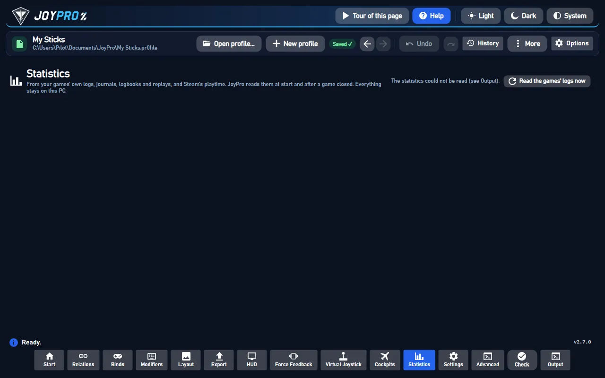

#立即讀取遊戲記錄檔
按鈕已撰寫工具提示 讀取您的遊戲自上次以來記錄的內容並更新頁面
「統計」頁面會顯示您在所有遊戲中玩了什麼、飛了什麼：每款遊戲的時數、您的前 10 名飛機、太空船和載具、您何時遊玩、趣聞、遊戲統計的數字（降落、擊殺、跳躍），以及您的設定檔如何成長。這些數字來自遊戲自己的記錄檔、日誌、飛行日誌和重播，以及 Steam 的遊戲時數。所有資料都留在您的電腦上。
這個頁面預設為 關閉：請在 設定 > 使用統計 > 在底部列顯示「統計」頁面 開啟它。


| 遊戲 | JoyPro 讀取的內容（絕不變更） |
|---|---|
| DCS World | 它的記錄檔、飛行日誌和航跡 |
| IL-2 | 任務報告 |
| X-Plane | 飛行日誌 |
| Elite Dangerous | 日誌 |
| Star Citizen | 它的遊戲記錄檔 |
| Tacview | 錄下的飛行 |
| Steam | 您遊戲的遊玩時數 |
flowchart TD G["您遊戲的記錄檔<br/>（上方的表格）"] --> S["JoyPro 讀取它們：<br/>啟動時、遊戲關閉後，<br/>或按下按鈕<br/>立即讀取遊戲記錄檔"] S --> P["「統計」頁面"] S --> R["您最常用的飛機：<br/>新飛機可以<br/>照它的方式配置"]
還沒有任何記錄？玩一款 JoyPro 支援的遊戲：JoyPro 會在遊戲關閉時（以及下次啟動 JoyPro 時）讀取它的記錄檔。只要 Steam 有遊玩時數，就會立即計入。
data\startup.cfg 中設定 mission_text_log = 1 時才會寫入任務報告；JoyPro 會告訴您這一點，絕不會修改遊戲的檔案。檢視模型 StatisticsViewModel.cs（它自己的檢視模型；主視窗負責傳遞引擎呼叫），檢視 Views/StatisticsView.axaml，圖表 Views/Controls/UsageCharts.cs；收集和排名在 MainWindowViewModel.Usage.cs 中。引擎：engine usage harvest 把新的記錄資料讀入 <data>\Usage（sessions.jsonl、totals.json、seen.json、exports.jsonl、overrides.json），engine usage stats 以一份 JSON 文件傳回整個頁面（加上 --profile 時還包括每個裝置的綁定、成長情形和最久未使用的綁定），engine usage sources 會列出這台電腦上有哪些資料。每個檔案都以唯讀且共用的方式開啟，因此絕不會干擾正在寫入記錄檔的遊戲。參考：使用統計。
本頁背後的功能文件，從儲存庫產生：
1 個控制項，從程式的原始碼讀取：1 個已撰寫，0 個附有來自原始碼的資訊（工具提示、程式碼註解、引擎呼叫），0 個尚待補充。